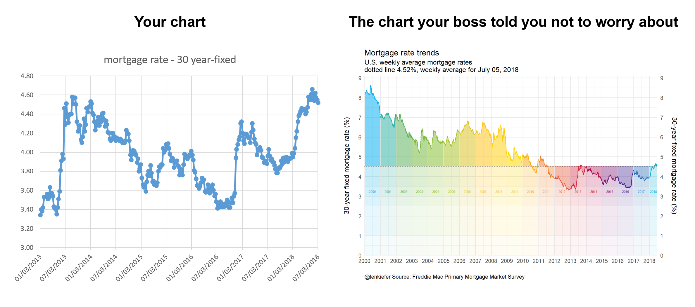

Let’s compare two charts. “Your chart”, or a chart that might come virtually unedited from spreadsheet software versus the chart your boss told you not to worry about:

Your chart is perfectly serviceable and for a quick exploration might be perfectly fine. However, why routinely generate such charts if you have the ability to make something a bit more dynamic? Being able to produce more interesting charts might not be necessary, but it also probably doesn’t hurt.
Let’s build a chart like the one on the right and several variations. Per usual with R.
We’ll also try out some of the new tidy evaluation feature available in ggplot2’s latest version (3.0) ad some other fun tricks.
Let’s get to it.
Mortgage rates in the 21st century
In this post we’ll explore mortgage rates and other interest rates in the 21st century. We’ll look at trends in the level of rates, as well as compare some key spreads.
Data
We can easily get the data via the Saint Louis Federal Reserve’s FRED database. If you followed my post from back in April of last year you know what we can do if we combine FRED with the quantmod package. It gets even easier if we use tidyquant like we did here.
I’m not going to load the tidyquant package, but call it via tidyquant::tq_get.
# Load Libraries ----
library(tidyverse)
library(scales)
library(cowplot) #for arranging plots
library(lubridate)
# Import data
# Mortgage rates in the 21st century
tickers <- c("DGS3MO",
"DGS1",
"DGS2",
"DGS3",
"DGS5",
"DGS7",
"DGS10",
"MORTGAGE30US")
df.rates <- tidyquant::tq_get(tickers,get="economic.data",from="2000-01-01")Our imported data is in a nice tidy format, but we’re going to need to widen it out to see what we have.
df2 <- spread(df.rates, symbol,price)
knitr::kable(head(df2,10))| date | DGS1 | DGS10 | DGS2 | DGS3 | DGS3MO | DGS5 | DGS7 | MORTGAGE30US |
|---|---|---|---|---|---|---|---|---|
| 2000-01-03 | 6.09 | 6.58 | 6.38 | 6.42 | 5.48 | 6.50 | 6.65 | NA |
| 2000-01-04 | 6.00 | 6.49 | 6.30 | 6.34 | 5.43 | 6.40 | 6.56 | NA |
| 2000-01-05 | 6.05 | 6.62 | 6.38 | 6.43 | 5.44 | 6.51 | 6.68 | NA |
| 2000-01-06 | 6.03 | 6.57 | 6.35 | 6.39 | 5.41 | 6.46 | 6.63 | NA |
| 2000-01-07 | 6.00 | 6.52 | 6.31 | 6.35 | 5.38 | 6.42 | 6.58 | 8.15 |
| 2000-01-10 | 6.07 | 6.57 | 6.38 | 6.42 | 5.42 | 6.49 | 6.62 | NA |
| 2000-01-11 | 6.13 | 6.67 | 6.45 | 6.49 | 5.43 | 6.57 | 6.72 | NA |
| 2000-01-12 | 6.16 | 6.72 | 6.49 | 6.53 | 5.45 | 6.63 | 6.76 | NA |
| 2000-01-13 | 6.10 | 6.63 | 6.40 | 6.45 | 5.41 | 6.54 | 6.67 | NA |
| 2000-01-14 | 6.13 | 6.69 | 6.44 | 6.49 | 5.41 | 6.59 | 6.71 | 8.18 |
Here we have various Treasury yields (3-month, 1-year, 2-year, 3-year, 5-year, 7-year and 10-year) and the 30-year fixed mortgage rate. The Treasury yields are available daily, but the mortgage rate survey is weekly (published Thursdays). We could have asked for the weekly Treasury yields, but they would have been for Fridays. Instead, we can do a custom aggregation to compare weekly averages ending Thursday with the mortgage rates. The survey is really Monday to Wednesday so if we wanted to be extra precise we could adjust for that too, but for our purposes today the week-ending Thursday approach will be good enough.
What we’ll do is create a date2 variable that’s only present when the mortgage rate survey data is available.
df2 <- df2 %>%
mutate(id=as.numeric(rel(!is.na(MORTGAGE30US))), id2=cumsum(id)+1*(id==0) ) %>%
mutate(date2=ifelse(id==1,date,NA)) %>%
fill(date2, .direction="up") %>%
mutate(date2=as.Date(date2,origin="1970-01-01"))
knitr::kable(head(df2,10))| date | DGS1 | DGS10 | DGS2 | DGS3 | DGS3MO | DGS5 | DGS7 | MORTGAGE30US | id | id2 | date2 |
|---|---|---|---|---|---|---|---|---|---|---|---|
| 2000-01-03 | 6.09 | 6.58 | 6.38 | 6.42 | 5.48 | 6.50 | 6.65 | NA | 0 | 1 | 2000-01-07 |
| 2000-01-04 | 6.00 | 6.49 | 6.30 | 6.34 | 5.43 | 6.40 | 6.56 | NA | 0 | 1 | 2000-01-07 |
| 2000-01-05 | 6.05 | 6.62 | 6.38 | 6.43 | 5.44 | 6.51 | 6.68 | NA | 0 | 1 | 2000-01-07 |
| 2000-01-06 | 6.03 | 6.57 | 6.35 | 6.39 | 5.41 | 6.46 | 6.63 | NA | 0 | 1 | 2000-01-07 |
| 2000-01-07 | 6.00 | 6.52 | 6.31 | 6.35 | 5.38 | 6.42 | 6.58 | 8.15 | 1 | 1 | 2000-01-07 |
| 2000-01-10 | 6.07 | 6.57 | 6.38 | 6.42 | 5.42 | 6.49 | 6.62 | NA | 0 | 2 | 2000-01-14 |
| 2000-01-11 | 6.13 | 6.67 | 6.45 | 6.49 | 5.43 | 6.57 | 6.72 | NA | 0 | 2 | 2000-01-14 |
| 2000-01-12 | 6.16 | 6.72 | 6.49 | 6.53 | 5.45 | 6.63 | 6.76 | NA | 0 | 2 | 2000-01-14 |
| 2000-01-13 | 6.10 | 6.63 | 6.40 | 6.45 | 5.41 | 6.54 | 6.67 | NA | 0 | 2 | 2000-01-14 |
| 2000-01-14 | 6.13 | 6.69 | 6.44 | 6.49 | 5.41 | 6.59 | 6.71 | 8.18 | 1 | 2 | 2000-01-14 |
Then we can group by this date variable and compute averages of the daily Treasury yields.
df3 <-
df2 %>%
group_by(date2) %>%
select(-date,-id,-id2) %>%
summarize_all(mean, na.rm=T) %>%
rename(date=date2) %>%
mutate(year=year(date),
yearf=factor(year), #will use for color later
spread10y2y=DGS10-DGS2)
knitr::kable(head(df3,10))| date | DGS1 | DGS10 | DGS2 | DGS3 | DGS3MO | DGS5 | DGS7 | MORTGAGE30US | year | yearf | spread10y2y |
|---|---|---|---|---|---|---|---|---|---|---|---|
| 2000-01-07 | 6.0340 | 6.556 | 6.3440 | 6.3860 | 5.428 | 6.4580 | 6.6200 | 8.15 | 2000 | 2000 | 0.2120 |
| 2000-01-14 | 6.1180 | 6.656 | 6.4320 | 6.4760 | 5.424 | 6.5640 | 6.6960 | 8.18 | 2000 | 2000 | 0.2240 |
| 2000-01-21 | 6.1300 | 6.765 | 6.4750 | 6.5325 | 5.505 | 6.6525 | 6.7825 | 8.26 | 2000 | 2000 | 0.2900 |
| 2000-01-28 | 6.1700 | 6.684 | 6.4820 | 6.5380 | 5.588 | 6.6320 | 6.7180 | 8.25 | 2000 | 2000 | 0.2020 |
| 2000-02-04 | 6.2380 | 6.584 | 6.6060 | 6.6280 | 5.686 | 6.6560 | 6.6960 | 8.25 | 2000 | 2000 | -0.0220 |
| 2000-02-11 | 6.2040 | 6.618 | 6.6760 | 6.7360 | 5.680 | 6.7640 | 6.7980 | 8.36 | 2000 | 2000 | -0.0580 |
| 2000-02-18 | 6.2300 | 6.550 | 6.6520 | 6.7060 | 5.730 | 6.7380 | 6.7600 | 8.38 | 2000 | 2000 | -0.1020 |
| 2000-02-25 | 6.2225 | 6.380 | 6.5375 | 6.5675 | 5.810 | 6.5850 | 6.6300 | 8.31 | 2000 | 2000 | -0.1575 |
| 2000-03-03 | 6.1840 | 6.394 | 6.5080 | 6.5520 | 5.778 | 6.5840 | 6.6360 | 8.27 | 2000 | 2000 | -0.1140 |
| 2000-03-10 | 6.1800 | 6.386 | 6.5120 | 6.5620 | 5.840 | 6.6000 | 6.6200 | 8.23 | 2000 | 2000 | -0.1260 |
mortgage rate plot
Let’s focus on the 30-year mortgage rates and create a plot like the one above.
colors
For most of the plots below, we’ll use a custom color scale. We’ll follow this post by Simon Jackson that describes how to create custom color palettes for ggplot2.
# Function for colors ----
#####################################################################################
## Make Color Scale ---- ##
#####################################################################################
my_colors <- c(
"green" = rgb(103,180,75, maxColorValue = 256),
"green2" = rgb(147,198,44, maxColorValue = 256),
"lightblue" = rgb(9, 177,240, maxColorValue = 256),
"lightblue2" = rgb(173,216,230, maxColorValue = 256),
'blue' = "#00aedb",
'red' = "#d11141",
'orange' = "#f37735",
'yellow' = "#ffc425",
'gold' = "#FFD700",
'light grey' = "#cccccc",
'purple' = "#551A8B",
'dark grey' = "#8c8c8c")
my_cols <- function(...) {
cols <- c(...)
if (is.null(cols))
return (my_colors)
my_colors[cols]
}
my_palettes <- list(
`main` = my_cols("blue", "green", "yellow"),
`cool` = my_cols("blue", "green"),
`hot` = my_cols("yellow", "orange", "red"),
`mixed` = my_cols("lightblue", "green", "yellow", "orange", "red"),
`mixed2` = my_cols("lightblue2","lightblue", "green", "green2","yellow","gold", "orange", "red"),
`mixed3` = my_cols("lightblue2","lightblue", "green", "yellow","gold", "orange", "red"),
`mixed4` = my_cols("lightblue2","lightblue", "green", "green2","yellow","gold", "orange", "red","purple"),
`mixed5` = my_cols("lightblue","green", "green2","yellow","gold", "orange", "red","purple","blue"),
`mixed6` = my_cols("green", "gold", "orange", "red","purple","blue"),
`grey` = my_cols("light grey", "dark grey")
)
my_pal <- function(palette = "main", reverse = FALSE, ...) {
pal <- my_palettes[[palette]]
if (reverse) pal <- rev(pal)
colorRampPalette(pal, ...)
}
scale_color_mycol <- function(palette = "main", discrete = TRUE, reverse = FALSE, ...) {
pal <- my_pal(palette = palette, reverse = reverse)
if (discrete) {
discrete_scale("colour", paste0("my_", palette), palette = pal, ...)
} else {
scale_color_gradientn(colours = pal(256), ...)
}
}
scale_fill_mycol <- function(palette = "main", discrete = TRUE, reverse = FALSE, ...) {
pal <- my_pal(palette = palette, reverse = reverse)
if (discrete) {
discrete_scale("fill", paste0("my_", palette), palette = pal, ...)
} else {
scale_fill_gradientn(colours = pal(256), ...)
}
}Here’s the code that creates our plot. I’m going to present this code as is, but later on we’re going to improve it by removing some of the repetition and take advantage of new ggplot2 features.
df.mtg<- filter(df.rates, symbol=="MORTGAGE30US", year(date)>=2000) %>%
mutate(year=year(date),
yearf=factor(year)) %>%
group_by(year) %>%
mutate(week=row_number()) %>%
ungroup()
df.mtg$year <- year(df.mtg$date)
dlist <- unique(df.mtg$date)
N <- length(dlist)
dlist <- unique(df.mtg$date)
N <- length(dlist)
W <- max(df.mtg$week)
lp<- tail(df.mtg,1)$price
g.line <-
ggplot(data=df.mtg ,
aes(x=date,y=price, fill=yearf,color=yearf))+
geom_ribbon(alpha=0.4, color=NA, aes(ymin=lp,ymax=price))+
geom_ribbon(alpha=0.05, color=NA, aes(ymin=3.5,ymax=price))+
geom_ribbon(alpha=0.05, color=NA, aes(ymin=3,ymax=price))+
geom_ribbon(alpha=0.05, color=NA, aes(ymin=2.5,ymax=price))+
geom_ribbon(alpha=0.05, color=NA, aes(ymin=1,ymax=price))+
geom_ribbon(alpha=0.05, color=NA, aes(ymin=0,ymax=price))+
geom_hline(yintercept=lp, linetype=2)+
geom_line(size=1.1)+
scale_color_mycol("mixed5")+
scale_fill_mycol("mixed5")+
theme_minimal(base_size=16)+
theme(legend.position="none")+
geom_text( data= filter(df.mtg, year> 1999 & week==26 & year<2018 | (year==2018 & week==14)),
aes(y=3.25,label=yearf),size=3)+
scale_y_continuous(limits=c(0,9.1),breaks=seq(0,9,1),sec.axis=dup_axis(),expand=c(0,0))+
scale_x_date(limits=as.Date(c("2000-01-01","2018-07-15")),date_breaks="1 year",date_labels="%Y",expand=c(0,0))+
labs(x="",y="30-year fixed mortgage rate (%)\n",
subtitle="U.S. weekly average mortgage rates\ndotted line 4.52%, weekly average for July 05, 2018",
title="Mortgage rate trends",
caption="@lenkiefer Source: Freddie Mac Primary Mortgage Market Survey")+
theme(plot.caption=element_text(hjust=0))
g.line
Taking advantage of new ggplot2 features
Let’s see if we can’t streamline our code a bit. Notice that that we use multiple calls of geom_ribbon. Let’s eliminate that by creating a function:
myr0 <- function(x, a=0.02){
geom_ribbon(alpha=a, color=NA, aes(ymin=0,ymax=min(x, !!var )))
}
myr <- function(x, a=0.02){
geom_ribbon(alpha=a, color=NA, aes(ymin=min(x, !!var )))
}Notice the !! var1? We’ll get back to that in a bit. The function smyr0 hades up from 0 to the minimum of x and !!var. The function myr shades from x up (or down) to ymax (definied elsewhere). We can use !!var in another function call to pass variable names.
Read more about tidy evaluation and !! in this helpful tutorial https://dplyr.tidyverse.org/articles/programming.html.
myf <- function(var=DGS10, my.ylab=NULL){
var <- enquo(var)
if(missing(my.ylab)) {my.ylab=var}
myr0 <- function(x, a=0.02){
geom_ribbon(alpha=a, color=NA, aes(ymin=0,ymax=min(x, !!var )))
}
myr <- function(x, a=0.02){
geom_ribbon(alpha=a, color=NA, aes(ymin=min(x, !!var )))
}
ggplot(data=df3 ,
aes(x=date,y=!!var, ymax= !! var , fill=yearf,color=yearf))+
geom_line()+
geom_ribbon(alpha=0.5, color=NA, aes(ymin=last(!!var)))+
map(c(0,pull(df3,!!var) %>% min()) %>% pretty(12), myr0, a=0.01)+
map(c(0,pull(df3,!!var) %>% last()) %>% pretty(12), myr, a=0.015)+
geom_hline(aes(yintercept=last(!!var)), linetype=2)+
geom_line(size=1.1)+
scale_color_mycol("mixed5")+
scale_fill_mycol("mixed5")+
theme_minimal(base_size=14) +
theme(legend.position="none")+
scale_y_continuous(breaks=seq(0,9,1),
#limits=c(0,9.1),
sec.axis=dup_axis(),expand=c(0,0))+
scale_x_date(limits=as.Date(c("2000-01-01","2018-07-15")),date_breaks="1 year",date_labels="%Y",expand=c(0,0))+
labs(x="",y=my.ylab,
subtitle="Dotted line at last observation",
title="Rate trends",
caption="@lenkiefer Source: Federal Reserve H.15, Freddie Mac Primary Mortgage Market Survey\nWeekly averages (daily Treasury yields averaged over week ending Thursday)")+
theme(plot.caption=element_text(hjust=0))
}
myf(var=DGS10, my.ylab="10-year Treasury Yield (%)")+ labs(title="U.S. Treasury Yields: 10-year Constant Maturity")
So how does this work? We pass a variable name (e.g. DGS10 for 10-year yield) and the tidy evaluation helpers in ggplot2 pass that as a variable to the ggplot2 function call. In my chart I want the ribbon shading to gradually fade to 0 so I map over a bunch of values (spaced via pretty). With alpha set to a small value for low transparency the shading fades with diminishing overlap near the bottom of the chart.
Then we can easily call our function for other variables.
myf(spread10y2y)+ labs(title="U.S. Treasury Yield Curve Slope: 10-year minus 2-year", y="10-year CMT - 2-year CMT (%)")
myf(DGS1)+ labs(title="U.S. Treasury Yields: 1-year Constant Maturity", y="1-year CMT (%)")
myf(DGS3MO)+ labs(title="U.S. Treasury Yields: 3-month Constant Maturity", y="3-month CMT (%)")
Yield Curve Plot
While we have these data handy, how about we make a yield curve plot? It would be interesting to plot the time to maturity agains the yield and see how that has varied over time.
We’ve already got the data, we just need to wrangle it a bit.
# for yield curve ----
yc <- data.frame(symbol=c("DGS3MO",
"DGS1",
"DGS2",
"DGS3",
"DGS5",
"DGS7",
"DGS10"),
months=c(3,12,24,36,60,84,120),
ttm=c("3 months","1 year", "2 years","3 years","5 years","7 years","10 years"))
df.yc <- left_join(df.rates,yc,by="symbol") %>%
filter(symbol !="MORTGAGE30US") %>% # drop mortgage rate data
filter(!is.na(price))
knitr::kable(head(df.yc,10))| symbol | date | price | months | ttm |
|---|---|---|---|---|
| DGS3MO | 2000-01-03 | 5.48 | 3 | 3 months |
| DGS3MO | 2000-01-04 | 5.43 | 3 | 3 months |
| DGS3MO | 2000-01-05 | 5.44 | 3 | 3 months |
| DGS3MO | 2000-01-06 | 5.41 | 3 | 3 months |
| DGS3MO | 2000-01-07 | 5.38 | 3 | 3 months |
| DGS3MO | 2000-01-10 | 5.42 | 3 | 3 months |
| DGS3MO | 2000-01-11 | 5.43 | 3 | 3 months |
| DGS3MO | 2000-01-12 | 5.45 | 3 | 3 months |
| DGS3MO | 2000-01-13 | 5.41 | 3 | 3 months |
| DGS3MO | 2000-01-14 | 5.41 | 3 | 3 months |
dlist.yc <- unique(df.yc$date)
N <- length(dlist.yc)
# dlist.yc[year(dlist.yc)==2018] find starting dates row number = 4504
i.start <- 4504
myplotf <- function(i=i.start){
in.df <- filter(df.yc,date %in% dlist.yc[c(i-30,i)]) %>% group_by(ttm) %>% mutate(pmax=max(price), pmin=min(price)) %>%
mutate(p.up = ifelse(date==max(date),price, pmin),
p.down = ifelse(date==max(date),price, pmax))
g.line <-
ggplot(data=in.df, aes(x=months,y=price, group=date, linetype=factor(date),color=factor(date)))+
theme_minimal(base_size=14)+
scale_x_continuous(breaks=yc$months, labels=yc$ttm)+
geom_ribbon(aes(ymin=pmin, ymax=p.up, fill="up"),alpha=0.25,color=NA)+
geom_ribbon(aes(ymin=pmax, ymax=p.down, fill="down"), alpha=0.25)+
geom_point(size=4)+
geom_path()+
scale_color_mycol("mixed",reverse=T, name="Date")+
scale_fill_mycol("mixed",reverse=T, name="Date")+
guides(fill=F,linetype=F)+
theme(legend.position="top")+
labs(x="time to maturity",y="Yield (%)",
title="U.S. Treasury Yield Curve",
subtitle="Blue: current day, Red: 30 trading days prior")+
scale_y_continuous(limits=c(0,3.5),breaks=seq(0,3.5,0.5))
g.bar <-
ggplot(data=in.df, aes(x=months,
y=p.down-price))+
geom_col(aes(fill="yield up"),alpha=0.5)+
geom_col(aes(y=p.up-price,fill="yield down"),alpha=0.5)+
theme_minimal(base_size=14)+
scale_x_continuous(breaks=yc$months, labels=yc$ttm)+
scale_y_continuous(limits=c(-0.6,0.6))+
scale_color_mycol("mixed",reverse=T, name="Change")+
scale_fill_mycol("mixed",reverse=T, name="Change")+
theme(legend.position="top",
plot.caption=element_text(hjust=0))+
labs(x="time to maturity",y="change in yield (%)",title="",
caption="@lenkiefer Source: Board of Governors of the Federal Reserve System (US), H.15 Selected Interest Rates\nretrieved from FRED, Federal Reserve Bank of St. Louis; July 6, 2018 ")
g<- cowplot::plot_grid(g.line,g.bar,ncol=1,rel_heights = c(2,1), align="hv") # use cowplot for multiple plots
}
myplotf(N) %>% print
If we wanted to have fun with this we could animate it:
library(animation)
oopt<-ani.options(interval=1/10)
suppressMessages(
saveGIF({for (i in i.start:N){
g<- myplotf(i)
print(g)
print(paste(i-i.start+1,"out of",N-i.start))
ani.pause()
}
for (ii in 1:20){
print(g)
ani.pause()
print(paste(ii,"out of",20))
}
}, movie.name = "YOURDIRECTORY/ycv2_2018.gif", ani.width=1200, ani.height=1200) # set YOURDIRECTORY where you want to save file
)
We could also play with the code above along the lines of this post to generate some other animations:

Or if we wanted to be a little more intense:

Conclusion
We built a bunch of charts and tried out some new ggplot2 features. Could this work for you?